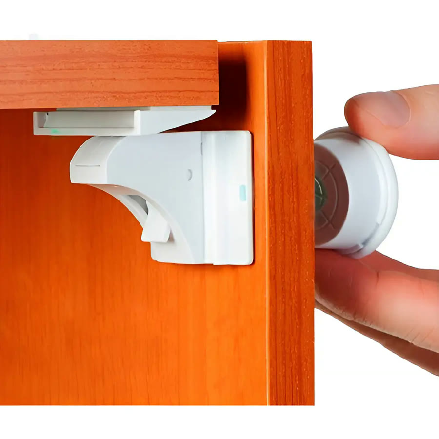
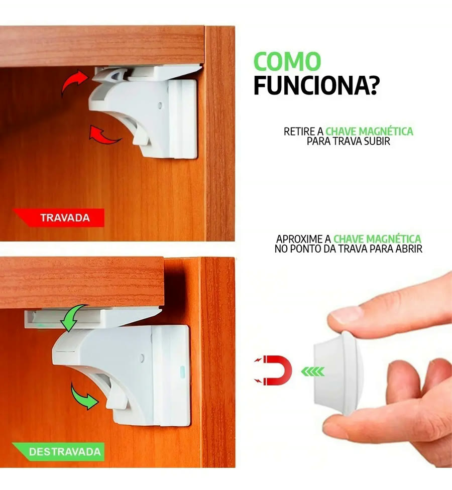
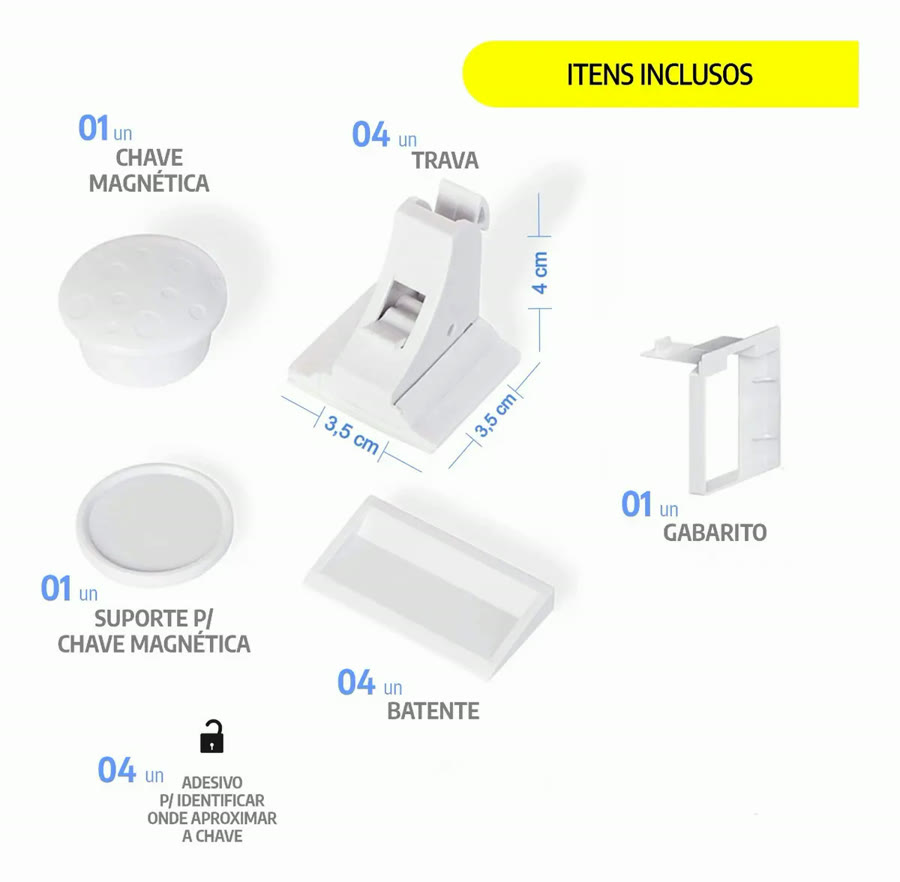
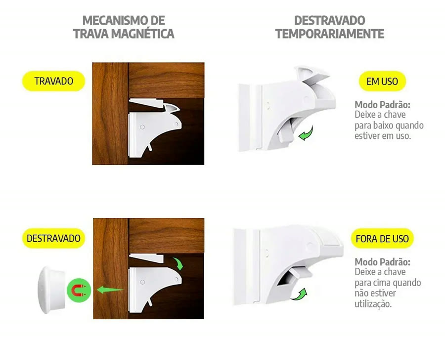
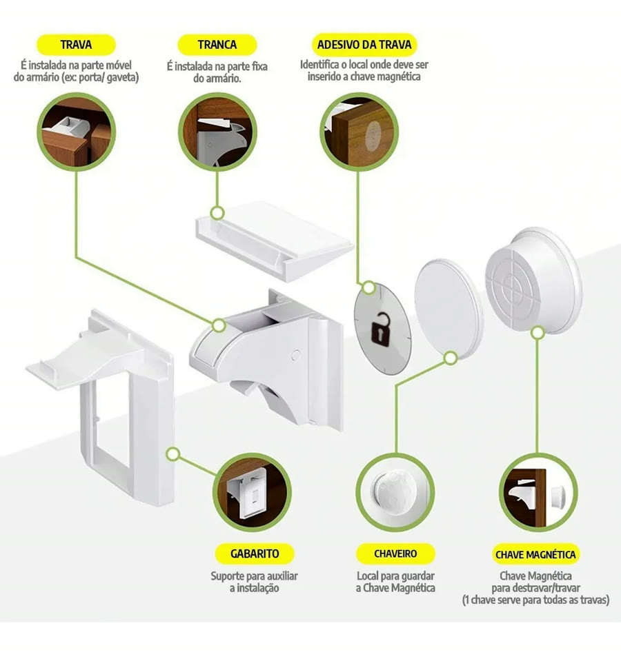
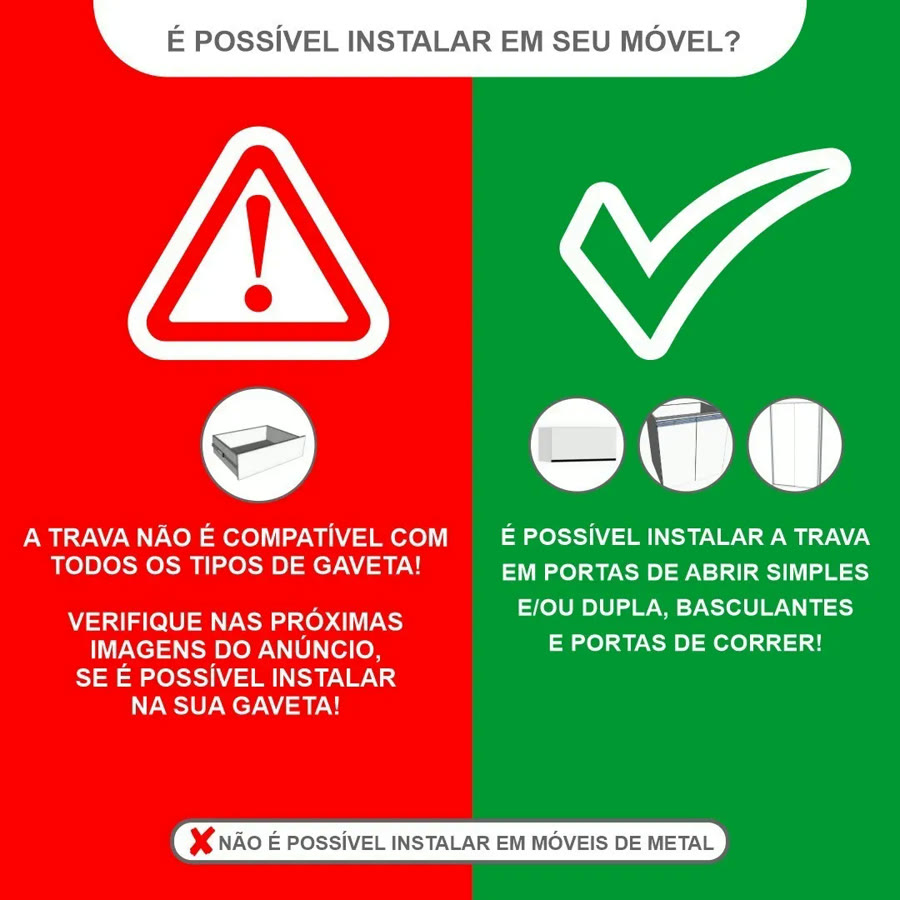

Achado nº 100
Elástico de cabelo trancando o armário?
Kit 4 travas magnéticas invisíveis para portas e gavetas
★ 4,4 · mais de 300 avaliações no Mercado Livre






O que diz a página oficial do produto
- É um kit de travas que ficam do lado de dentro de portas e gavetas, sem aparecer por fora
- O kit tem 4 travas e 1 chave magnética, com suporte para a chave
- Para abrir, encosta-se a chave magnética do lado de fora, no ponto da trava
- Segundo o anúncio, a instalação é com fita dupla face 3M, sem furar nem parafusar
- Segundo o anúncio, serve para portas e gavetas de 1,5 a 2,5 cm de espessura
- Segundo o anúncio, não serve para todo tipo de gaveta nem para móveis de metal
- Pelas fotos, dá para deixar a trava destravada quando não precisar dela
- Não usa pilha nem bateria
- Vem com um gabarito e 4 adesivos para marcar onde encostar a chave
- No Mercado Livre, tem nota 4,4 com mais de 300 avaliações e mais de mil vendidos
Link de afiliado: se você comprar por ele, a Achadaria pode receber uma comissão, sem custo extra para você. Preço, estoque e entrega são da loja e podem mudar; confira lá antes de comprar.